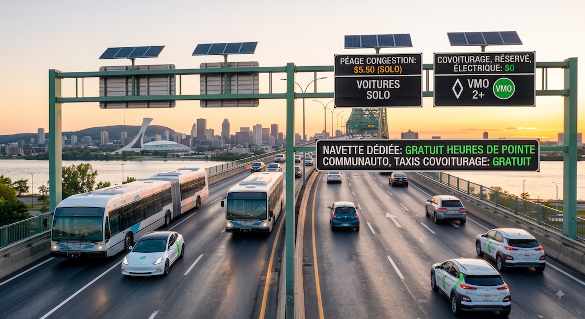

Une tarification modulée de 5,50 $ pour l'auto solo à l’entrée de l’île, réinvestie à 100 % dans des navettes de banlieue directes et la gratuité pour le covoiturage.
Un gain direct pour les Montréalais : Réduction immédiate du trafic de transit dans nos rues résidentielles, fin de la compétition féroce pour le stationnement et amélioration marquée de la qualité de l'air.

Réduction massive du trafic de transit qui engorge nos artères locales et nos rues résidentielles aux sorties de ponts aux heures de pointe.
Moins de navetteurs solos venus des banlieues qui occupent gratuitement les places de stationnement sur rue dans les quartiers centraux et périphériques.
Diminution directe de la pollution atmosphérique et des émissions de GES causées par les files d'attente interminables de véhicules au ralenti.
Pour créer la première zone de tarification de la congestion au Canada, nous devons interpeller simultanément les trois paliers de gouvernement et les instances métropolitaines.
Exiger de Transports Canada et de la Société des Ponts Jacques Cartier et Champlain Inc. (PJCCI) l'autorisation d'installer les caméras de lecture de plaques (ANPR) et l'entente de partage de données avec la SAAQ.
Mettre de la pression sur le ministère des Transports et de la Mobilité durable (MTMD) pour autoriser la taxation territoriale de congestion, valider les sanctions par radars photos et amender la Loi sur l'ARTM (A-33.3).
Interpeller l'ARTM, la CMM et la Ville de Montréal pour intégrer le tarif de 5,50 $ à la grille métropolitaine et déposer l'avis de motion instaurant le règlement de zone de mobilité sous la Loi sur les cités et villes.
Mobiliser les maires des municipalités de banlieue et les Tables des préfets (TPECN et Montérégie) pour participer au recueil des besoins en navettes express vers les stations du REM et du métro.
Avant le déploiement du projet pilote en avril 2027, nous cartographions les besoins réels des navetteurs de la Couronne Nord et de la Couronne Sud.
Indiquez vos codes postaux (RTA) d'origine et de destination ainsi que vos préférences pour évaluer l'intérêt envers les navettes express et le covoiturage.
Le tarif est fixé légèrement au-dessus du coût du transport en commun pour encourager l'abandon du solo-automobilisme tout en récompensant la mobilité partagée.
S'applique uniquement aux véhicules individuels avec un seul occupant entrant à Montréal par les ponts aux heures de pointe.
Rendre le covoiturage aussi simple que de prendre le bus grâce à des infrastructures légères de quartier.
Aménagement de points de rencontre sécurisés dans chaque secteur postal de banlieue et sur l'île.
Application mobile permettant d'embarquer un passager en attente sur votre route pour débloquer immédiatement l'exemption de péage.
Aires de regroupement rapide juste avant les entrées de ponts pour faciliter le covoiturage de dernière minute.
Les élections générales provinciales du **5 octobre 2026** et les élections partielles fédérales à Montréal (**Laurier–Sainte-Marie** et **Rosemont–La Petite-Patrie**) constituent la fenêtre idéale pour faire adopter les modifications législatives requises aux niveaux fédéral, provincial et municipal.
Fédéral : Autoriser la tarification sur les ponts sous gestion fédérale et harmoniser le registre de plaques d'immatriculation.
Provincial : Modifier le Code de la sécurité routière et confier à l'ARTM la gestion du fonds de réinvestissement des péages.
Municipal : Adopter le règlement de zonage de mobilité et aménager les sorties de ponts.